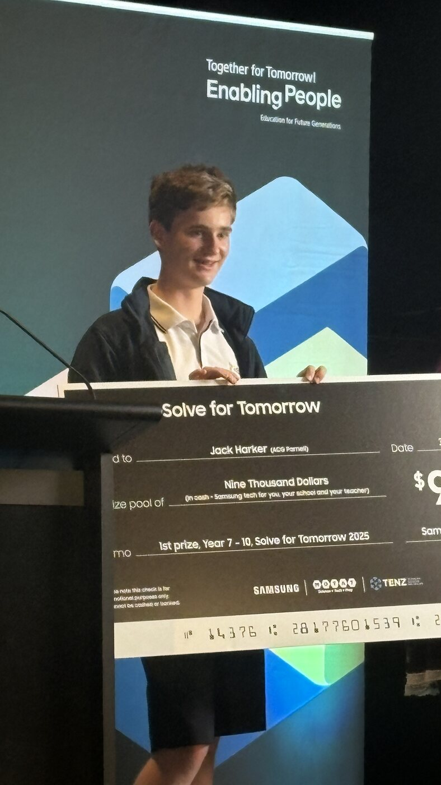
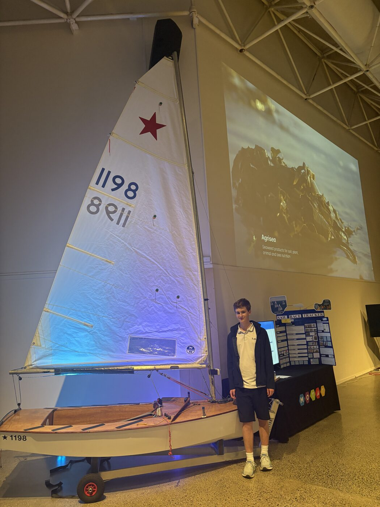
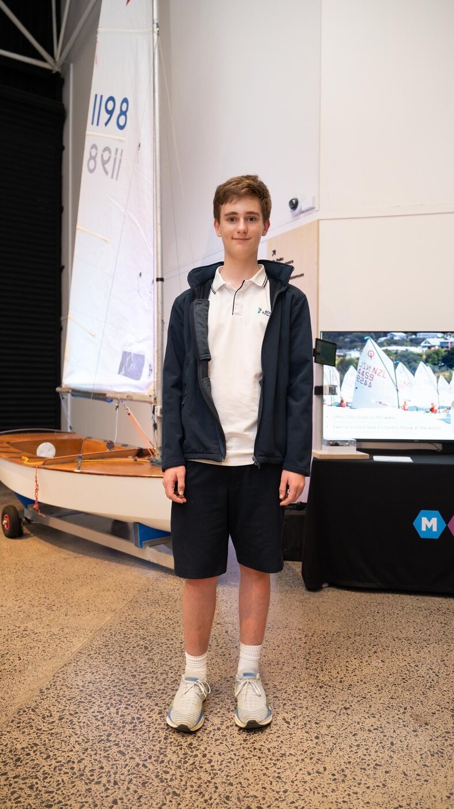
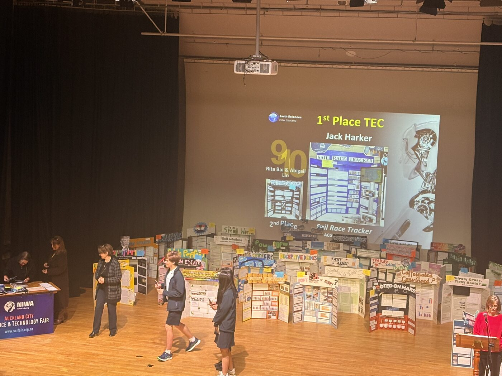

I'm a competitive youth sailor. I built Sail Race Tracker because youth sailing is exciting but almost impossible to follow from shore — and the technology that fixes it shouldn't only exist at the America's Cup.
Sail Race Tracker took 1st prize in the Years 7–10 category of Samsung Solve for Tomorrow New Zealand — a NZ$9,000 prize pool (cash plus Samsung tech for me, my school and my teacher), awarded on 30 October 2025 in partnership with MOTAT and TENZ.




Earlier in 2025, Sail Race Tracker also took 1st place in the Technology category at the NIWA Auckland City Science & Technology Fair (held 28–30 August 2025).
Sail Race Tracker was featured on Radio New Zealand and recognised by Samsung New Zealand and Technology Education New Zealand.
A Radio New Zealand interview on building affordable, open-source technology for the sailing community.
Featured on Samsung New Zealand's Solve for Tomorrow winners page.
samsung.com/nz →"Young Kiwi innovators shine at Samsung's Solve for Tomorrow competition."
idealog.co.nz →"Innovation and creativity on display as Samsung crowns Solve for Tomorrow winners."
motat.nz →"Ngā Hua mō Āpōpō" — Technology Education New Zealand's feature on the 2025 winners.
tenz.org.nz →Given the complexity, I started by mapping a roadmap and setting milestones, documenting every step in a detailed log book.
"This prototype proves it's possible to build a low-cost, real-time GPS race-tracking system using open-source tools and off-the-shelf components — far more cost-effective than anything on the market, with no expensive data plans or subscriptions."
Studied SailGP, the America's Cup and commercial trackers; chose LoRa and the open-source Meshtastic ecosystem.
Defined users and needs, then designed the full boat → mesh → gateway → Pi → dashboard flow.
Acquired, labelled and tested boards; flashed firmware; validated GPS fix, LoRa transmission and mesh comms.
Wrote the Python MQTT listener, designed the database, built the Flask API and the Leaflet dashboard.
Bench, pool and on-water trials with RAYC; logged data and interviewed coaches, sailors and parents.
Refined waterproofing, charging, device assignment and replay tools for real event use.
Every decision, dead-end and breakthrough was captured — using AI as a 24/7 research tutor while all the testing, coding and assembly was done hands-on.
Huge thanks to the coaches, sailors and parents at Royal Akarana, Kohimarama, Wakatere and Maraetai Beach boating clubs, and to Yachting New Zealand, NZIODA and High Performance Sport NZ for their insight. Thanks to my friend Clemens for help with the web hosting — and to my family, for their patience with parts charging in the kitchen and enclosures being tested in the pool.
The hardware, the software, the dashboard and the field-test results.
Explore the build